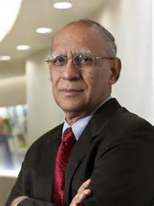

Ashok Soota (born 12 November 1942) is an Indian IT entrepreneur having served for more than 30 years in the IT industry. He is a serial entrepreneur and presently, the Executive Chairman and Co-Founder of Happiest Minds Technologies,a company aimed at enabling Digital Transformation for customers by delivering a Smart, Secure and Connected experience through disruptive technologies. The company was ranked Number 2 on the Deloitte Technology Fast 50 India 2014, a ranking of the 50 fastest growing technology companies in India,in November 2014 and ranked #13 in Deloitte Annual ranking of the fastest growing technology companies in Asia Pacific and claims to be on track to achieve its revenue target of $100 million (Rs 623 crore) by 2017 and break even by end of fiscal 2015.
Ashok Soota has been recognized twice as ‘IT Man of the Year’, and as ‘Electronics Man of the Year’.[5] He was also recognized at INFOCOM 2013, Kolkata, as one of the 12 Gems who helped to build Indian IT Industry.
Soota spent early years of his career with the Shriram Group of Industries in India in 1965. He served as President of Wipro Infotech from 1984 to 1999. Under his watch, Wipro’s IT business grew from US $2 million in 1984 to a US $500 million run-rate in 1999.
After achieving this milestone, Soota co-founded Mindtree in 1999 which during his leadership became a global entity with revenue of US $350 million, 9000 employees, and offices across the Americas, Europe and Asia.
Soota is the founding chief patron of the Samarthanam Trust for the Disabled. He is the Founding Trustee for Ashirvadam, an NGO focused on the environment and support for the needy, including in terms of their education, vocational training and medical support